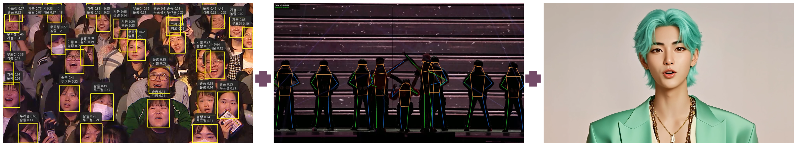
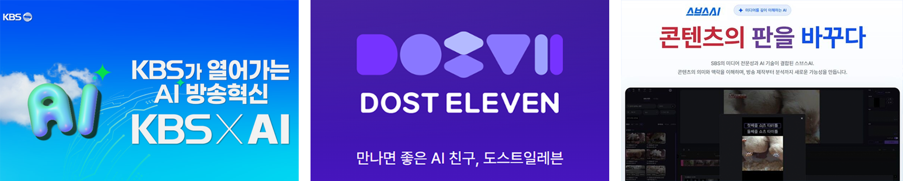
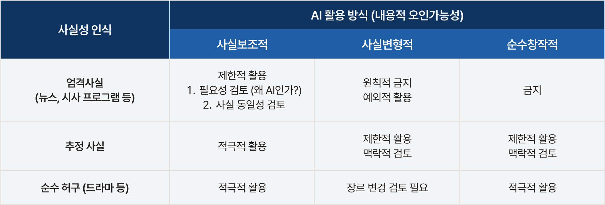
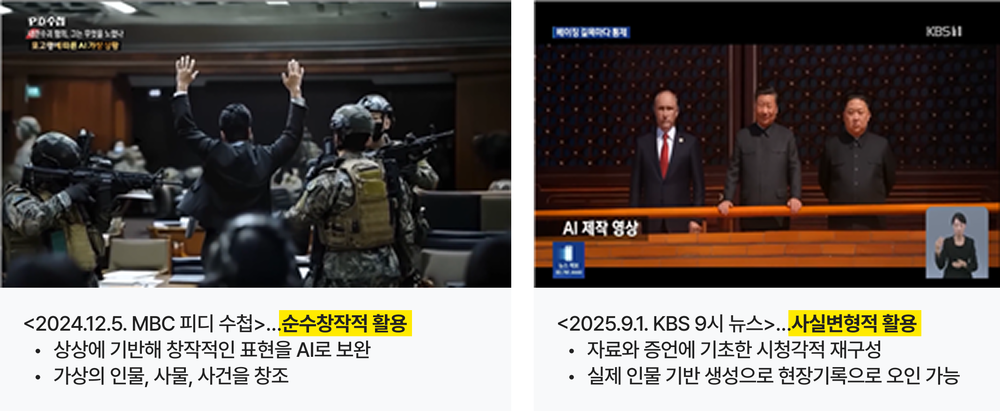
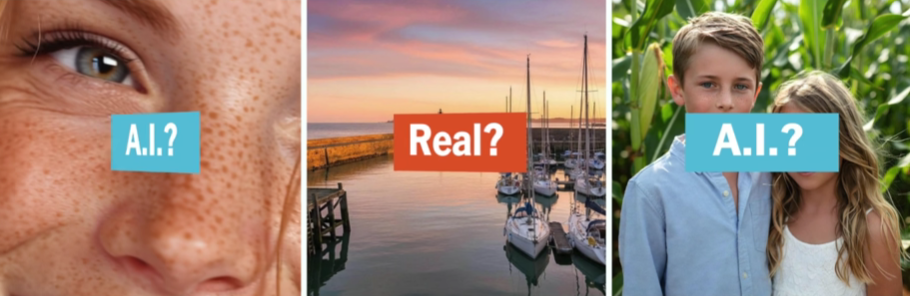

최근 AI 기술의 진화는 기반 기술 연구, 개념 검증(PoC), 현업 적용으로 이어지던 전통적 R&D 로드맵을 뛰어넘을 만큼 빠르고 광범위하다. AI 도입 초기 방송 콘텐츠 제작은 주로 개별 제작자의 실험적 활용에 의해 이루어졌다. 이들은 외부 AI 솔루션을 조합해 비용 절감과 시간 단축, 그리고 기존에는 구현하기 어려웠던 새로운 형식의 콘텐츠 제작 가능성을 보여주었다.
그러나 방송 콘텐츠는 제작자의 창의적 의도와 복잡한 프로세스에 대한 이해가 필수적이고 필요에 따른 변형과 최적화가 필요한 경우가 많아 외부 솔루션 도입만으로는 한계가 있었다. 이에 따라 현재의 제작 현장은 음성·영상·언어·검색 기술을 융합한 ‘인하우스(In-house)’형 시스템 구축으로 나아가고 있다. 이러한 자체 개발 역량은 단순한 기술 적용을 넘어 방송사만의 콘텐츠 혁신 경쟁력으로 이어질 가능성이 크다.
또한 아카이브, 메타데이터, 뉴스룸 환경 등 방송사 고유의 데이터와 업무 구조에 맞추어 AI 기술을 커스터마이징하고 이를 실제 워크플로우에 안정적으로 통합하는 자체 개발 역량이 향후 지속적인 미디어 콘텐츠 혁신의 핵심 경쟁력이 될 것이다.

[그림 1] 관객 호응도 분석, 안무자 스켈레톤 분석, AI 진행자가 결합된 융합형 AI 콘텐츠 개발 예시
(출처: KBS 창원 K-POP 월드페스티벌)
방송사들은 2025년을 기점으로 개별 부서 단위의 AI 활용을 전사적 전략과 통합 거버넌스 구축 차원으로 확장하여 AI 전환(AX, AI Transformation)을 추진했다. 방송 제작과 유통 전 과정에 AI를 내재화하여 지능형 미디어 기업으로 도약하려는 시도이다.
⦁
KBS는 2025년을 ‘AI 방송 원년’으로 선언하고, 외부 전문가 중심의 ‘AI 방송혁신자문단’ 구성, 네이버와의 포괄적 업무협약 체결, AI 활용 가이드라인 제정, 전담 조직인 ‘AI 방송혁신단’ 신설, 사내 AI 챔프 교육 등 전사적 AI 전환 체계를 단계적으로 구축했다.
⦁
MBC는 2024년 AI 전략 자회사 DOST11(도스트 일레븐)을 설립하여 방송 특화 맞춤형 AI 솔루션 사업화를 추진 중이며, 본사 내 AI 전담 조직인 'AI전략팀'과 AI 전환 TF를 중심으로 관련 기능을 강화하였다.
⦁
SBS는 AI 기반 미디어 혁신 브랜드 ‘스브스 AI’를 공식 출범하고 전담 조직인 'AI파트너십팀'을 중심으로 기획부터 유통에 이르는 다층적 AI 전략을 전개하며 AI 중심 미디어 기업으로의 전환을 모색하고 있다.
이처럼 국내 방송사들은 AI를 단순한 제작 보조 도구가 아니라, 기획·제작·아카이브·편성·유통·서비스 전반을 재구성하는 핵심 인프라로 인식하고 있다. 궁극적으로는 콘텐츠 생산성과 품질을 동시에 높이고, 데이터 기반의 지능형 미디어 생태계를 구축함으로써 미디어 산업의 밸류체인 전반을 혁신하려는 방향으로 진화하고 있다.

[그림 2] 지상파 방송사의 AI 전환 조직 및 브랜드
(출처: KBS홈페이지, DOST11홈페이지, SBS뉴스)
1) 초기 비용과 내부 저항
전사적 AI 전환은 필연적으로 '초기 비용'과 '내부 저항'이라는 허들을 마주한다. AI는 비용 절감과 효율성 향상을 기대하게 하지만, 도입 초기에는 오히려 외부 솔루션 구독, GPU·클라우드 인프라, 데이터 정제, 커스터마이징 비용 등이 지속적으로 발생하며, 빠르게 진화하는 기술 탓에 시스템 노후화와 재구축 리스크도 크다. 이는 기존 방송 기술 투자와 비교해 AI 전환이 높은 불확실성을 내포하고 있음을 의미한다. 결국 방송사는 어떤 기술이 혁신과 생산성에 실질적으로 기여하는지 판단하고 우선순위를 결정하는 전략을 효과적으로 설정해야 한다. AI 기술이 빠르게 진화하는 상황에서 특정 모델에 종속되지 않는 전략적 관리 역량도 중요하다. 이를 위해 API 연동, 모듈형 아키텍처, 멀티모델 전략과 같은 유연한 기술 구조 설계가 필수적이다. 변화하는 기술 환경에 기민하게 대응할 수 있는 조직적 운영 체계 역시 함께 마련되어야 한다. 결국 성공적인 AI 전환은 지속적으로 변화하는 기술 생태계 속에서 효율성과 유연성을 동시에 확보하는 전략적 관리 역량의 문제라고 할 수 있다.
인력이 AI로 대체될 것이라는 두려움은 대부분의 산업에서 공통적으로 나타나지만, 창의성과 인간의 표현 역량이 중요한 미디어 산업에서는 특히 민감한 문제로 받아들여진다. 아나운서나 기자의 생체 정보(얼굴, 음성) 활용에 따른 동의 및 보상 체계 수립 미비, 자동화 기술(AI 카메라, 프롬프터, 생성형 그래픽 등) 도입에 따른 역할 축소 우려가 구성원들의 내부 저항으로 이어질 수 있다. 따라서 방송사는 지속가능한 전환을 위해 구성원과의 신뢰 형성, 명확한 활용 원칙 및 보상 체계 수립, 재교육방안 등을 마련해야 한다. 결국 지속가능한 전환은 기술 혁신과 구성원의 신뢰 확보가 함께 이루어질 때 가능하다.
2) 신뢰와 품질 기준
방송 산업에서 가장 치명적인 리스크는 신뢰 하락이다. 2026년 1월 시행된 『AI 기본법』은 고영향 AI의 위험 관리 방안 마련과 가시적 워터마크 표시 의무화 등을 규정하고 있다. KBS는 2025년 8월 AI 활용에 대한 큰 틀인 ‘KBS AI 가이드라인’을 제정했고 이 대원칙 위에 2026년 6월 투명성과 윤리 기준을 구체화한 세부 지침인 ‘KBS AI 활용 안내문’을 공표할 예정이다. 과기정통부 자료에 의하면 방송사가 AI 이용사업자에 해당되지 않으나, KBS는 공영방송사로서의 책임을 고려하여 자체적인 기준을 마련한 것이다. KBS AI 활용 안내문에서는 방송 제작자(직접제작, 외주제작, 디지털 및 공사서비스 영역 포함)가 AI를 활용할 때 준수해야 할 활용 범위, 승인 절차, 표시·고지방식, 책임 및 기록 관리 기준을 명확히 하여 다양한 경우에 대한 일관되고 명시적인 기준을 제시하고자 한다.

<표 1> KBS AI 활용 결정 기준
(출처 : KBS AI 활용 안내문)
위 지침에 따르면 보도·시사 장르는 사실성 인식 기준에서 ‘엄격 사실’에 해당하며 아래와 같은 과거 방송 사례는 각각 순수창작적 활용으로 ‘금지’, 사실변형적 활용으로 ‘원칙적 금지’(예외적 활용 요건: 명백한 공익성, AI 활용 외 현실적 대안 없음, AI 활용으로 인한 오인 또는 왜곡 위험 최소화) 사례에 해당한다.

[그림 3] KBS AI 활용 결정 기준에 따른 사례 구분
(출처 : KBS AI 활용 안내문)
나아가 방송사는 출처 인증을 위한 비가시적 워터마크 삽입과 AI 생성·변형에 대한 검출을 적극 도입하여 신뢰 수준을 제고해야 한다. 출처 인증을 위해 헤더에 제작·배포 메타데이터를 삽입하는 방식인 C2PA(Coalition for Content Provenance and Authenticity)나 영상에 사람이 인지할 수 없는 형태로 워터마크 신호를 삽입하는 방식인 구글의 SynthID 같은 방식도 고려할 수 있다. 최근 뉴욕타임즈의 검출 솔루션 실험 리포트에서는 1,000여 건의 콘텐츠와 12개의 검출 툴에 대한 다양한 실험 결과를 제공하고 있다. 생성기술과 검출기술은 창과 방패처럼 함께 성장해 나갈 예정이라 방송사는 최신 기술에 대한 지속적인 이해와 검출 역량을 끊임없이 업데이트해야 하는 상황에 놓여 있다.

[그림 4] AI Fake를 검출하기 위해 AI로 생성된 영상과 이미지
(출처 : 뉴욕타임즈)
지상파 방송은 일반 미디어에 비해 훨씬 더 엄격한 품질 기준을 요구받는다. AI가 제작 효율성과 생산성을 크게 높여 주지만 방송 전문 인력이 직접 제작하는 수준과 비교했을 때 아직 한계를 보이기도 한다. 올해 4월 KBS 유튜브 생중계(NASA 아르테미스 2호 발사)에서 AI 번역 오류(외부 솔루션 사용)로 비속어가 자막에 노출된 사고는, 단 한 번의 오류만으로도 매체가 쌓아온 신뢰에 치명적 흠집을 남길 수 있음을 시사한다. 수십 년 경력을 가진 카메라 감독의 촬영과 AI 기능이 탑재된 PTZ 카메라의 자동 제어는 같은 수준이라고 보기 어렵다. 그러나 KBS의 VVERTIGO(버티고)와 같은 가상 카메라 기술이나 대량의 PTZ를 동원한 관찰 예능의 경우 기존의 리소스로는 구현하기 어려웠던 콘텐츠를 만들어내기도 한다. 따라서 AI를 활용할 때는 품질에 대한 안전장치를 마련하고 생산성과 품질 기준 사이의 최적의 균형을 찾는 전략적 판단이 필수적이다.
서술한 한계와 리스크에도 불구하고 AI는 공익성 제고를 위한 강력한 무기이기도 하다. 지능형 CCTV 및 제보 영상 분석, 자동 원고 작성, AI 보이스와 AI 앵커 기술을 접목하면 방송사는 재난방송을 신속하게 송출할 수 있다. 또한 청각 장애인을 위한 AI 수어 아바타, 시각 장애인을 위한 맞춤형 보이스 리딩, 다문화 가정이나 재외 국민을 위한 다국어 자막이나 더빙을 확대할 수 있다. 방송사를 방문하는 시청자들에게는 피지컬 AI 기반의 AI 도슨트가 방문객 특성 맞춤형 설명을 제공할 수도 있다. 마지막으로 KBS가 운영 중인 공공 스톡 콘텐츠 서비스인 ‘KBS 바다’와 같은 대국민 서비스 역시 AI 기술을 활용하면 영상, 이미지, 오디오 자산을 보다 쉽게 서비스 가능한 형태로 가공해서 활용할 수 있게 된다.
글로벌 빅테크 플랫폼에 대한 종속을 막고 미디어 주도권을 쥐기 위해, 이제는 범방송사 차원의 전략적 연대가 필요한 시점이다. 그 연대의 출발점은 바로 방송사들이 수십 년간 축적해 온 방송 영상의 보호와 권리 확보에 있다. 방송사의 아카이브는 한국 사회의 깊은 문화적 맥락과 고품질의 영상 문법이 담긴 대체 불가능한 핵심 자산이자, AI 시대에 가장 가치 있는 학습 데이터다. AI 기업들의 무분별한 데이터 크롤링과 저작권 침해 시도에 대해 방송사들은 공동의 방어 전선을 구축하고, 정당한 데이터 사용에 대한 합당한 보상 체계를 요구하는 산업적 연대가 필요하다.
이러한 방어적 결속은 나아가 범방송사 차원의 '공통 가이드라인' 수립으로 이어져야 한다. 각 사가 파편적으로 규제에 대응하기보다, AI 산출물에 대한 윤리적 기준, 딥페이크 악용 방지 대책, 저작권 보호 명문화 등 일관된 표준을 선제적으로 정립할 때, 미디어 업계의 공통 룰은 정부 정책을 올바른 방향으로 견인할 뿐만 아니라, 거대 글로벌 플랫폼과의 협상 테이블에서 레버리지로 작용할 것이다.
나아가 이러한 결속은 'K-미디어의 글로벌 확산'을 위한 실질적인 기술 협력으로 발전할 수 있다. 초정밀 문맥 번역과 입모양 변환(Lip-sync) 기반의 다국어 자동 더빙 등 고도화된 'AI 현지화(Localization)' 분야에서 각 사의 기술 역량을 공유하고, 필요한 솔루션을 개발하는 공동 과제를 수행하는 방식이다. 이러한 실무적 연대를 통해 개별 방송사의 중복 투자를 방지하고 효율적으로 글로벌 유통 역량을 강화함으로써, K-콘텐츠의 해외 시장 진출을 위한 탄탄한 기반을 다질 수 있을 것이다.
- 김예리(2026.4.7). “갓 이즈 굿” 미군 관점 게임처럼...KBS의 AI 전쟁영상 논란. 《미디어오늘》.
- 박문칠(2025). 시사 다큐멘터리와 AI 영상의 조우: MBC “내란수괴 혐의, 그는 무엇을 노렸나”편을 중심으로. <글로벌문화콘텐츠>, 2025년 64호, pp. 185-207.
- 백선하(2026.2.5). KBS, PTZ 카메라 기반 ‘AI TV 스튜디오’ 본격 운영. <방송기술저널>.
- 이상진(2025.11). K-콘텐츠의 새로운 진화, AI를 통한 방송사 제작 현장의 변화. <기술과 혁신>, Vol.474. KOITA.
-
저작권위원회(2025.12). 워터마킹 기술의 진화와 주파수 영역에서의 워터마크 삽입하는 기법 분석. <저작권 이슈 트렌드>,
통권 제71호, pp. 3-11. - 조성미·조현영(2024.8.25). 70년 영상을 빅테크에? 국산 VLM 개발 착수. 《연합 뉴스》 .
-
Stuart A. Thompson(2026.2.25). These Tools Say They Can Spot A.I. Fakes. Do They Really Work?
The New York Times.